Windows XP
Windows 7
Windows 8
MAC OS
Linux Ubuntu
- Windows XP
- 開始->執行
- 在執行的欄位輸入 "cmd"
- 在黑色的框框中輸入 "ipconfig /all"
"Physical Address" 即為你的網路卡卡號(MAC Address) - Windows 7
- 開始
- 點選"命令提示字元"
- 在黑色的框框中輸入 "ipconfig /all"
- 實體位置即為你的網路卡卡號(MAC Address)
- Windows 8
- 按 開始鍵+R鍵 叫出 "執行"
- 鍵入 "ipconfig /all"
- 找到 "實體位置(Physical Address)" 即為網路卡卡號
- MAC OS
- 點選 "System Preferences"
- 點選 "Internet & Wireless" 的 "Network"
- 選擇 "Advanced"
- 選擇 "Hardware" 就可以找到 "MAC Address"
- Linux Ubuntu
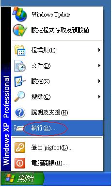
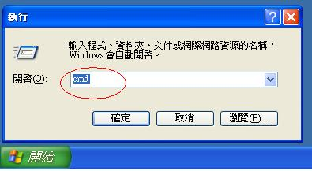
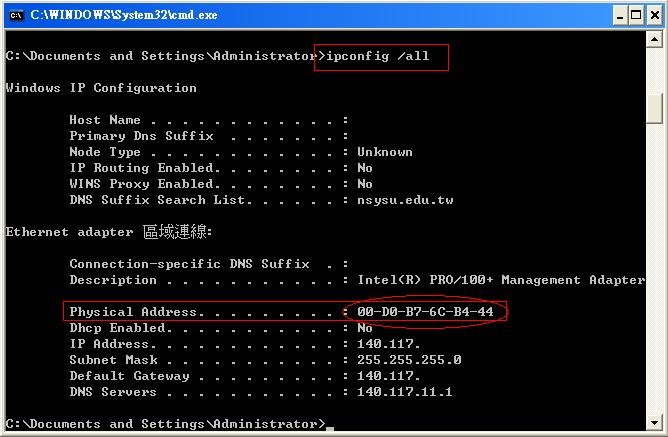
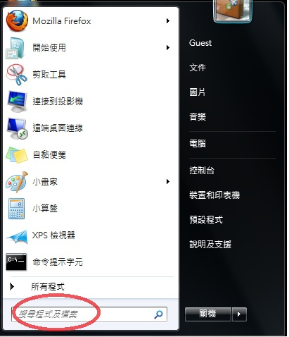
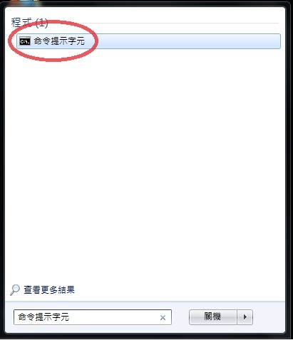
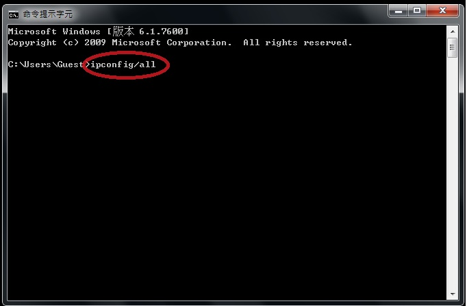
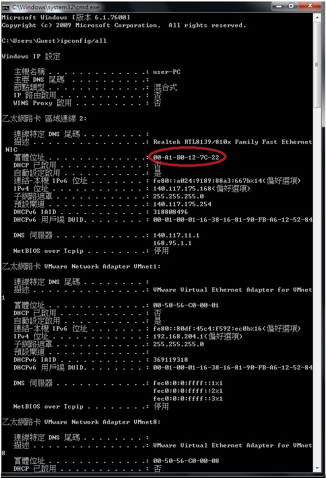


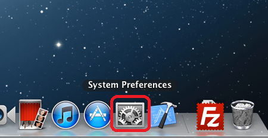
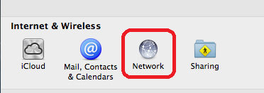
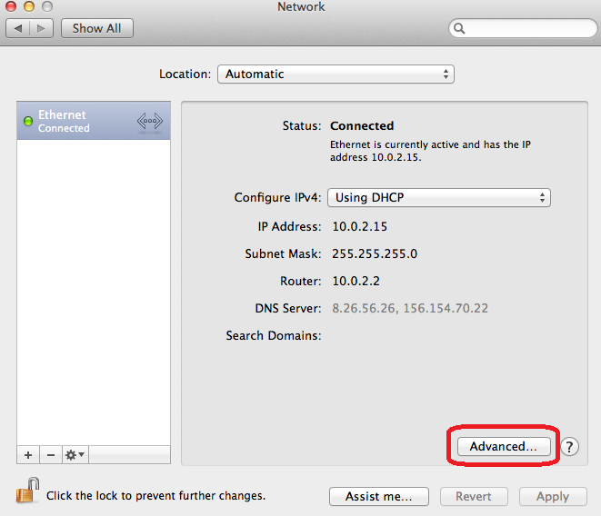
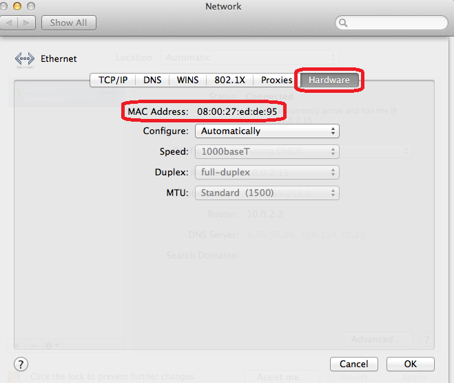